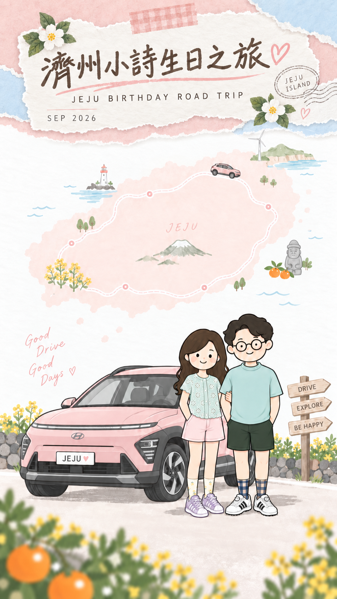

SIUCJEJU2026 / VISUAL LANGUAGE
一本溫柔的
濟州生日手帳
從封面的水彩、撕紙、花朵與公路旅行出發，延伸兩種互相呼應的版面：一頁收藏心情，一頁慢慢閱讀。
01 / COVER
水彩旅行封面
粉紅島嶼 × 奶白撕紙 × 手繪旅行記憶

原圖完整呈現，保留人物、地圖、花卉與紙張質感；操作放在畫面下方，讓插畫成為主角。
打開封面 ↗02 / READING
奶白紙感內頁
深啡文字 × 粉紅章節 × 輕量手帳細節
JEJU · SEPTEMBER 2026
01 / A little birthday wish這次，慢慢旅行
九月，一起去濟州。把窗外的海、沿途的小店，還有生日那天的笑容，收進這一本旅行手帳。
想停下來的時候就停下來，遇到喜歡的風景就多看一會。讓每一天留一點空白，也給兩個人慢慢聊天的時間。
- 正文 16px、1.85 倍行高，深啡字配奶白底。
- 章節用手寫感標題，長文用系統繁中字體。
- 粉紅用於分隔與點綴，資訊提示用淡綠或海水藍。
- 插畫集中在封面，內頁以留白維持閱讀節奏。
THE PALETTE
從封面延伸的色彩
奶白紙色#FFFDF9
水彩粉底#FAE3DF
櫻花粉#EEA5AA
海水藍#D9EDF4
葉片綠#B8C9A4
濟州橘#EDAA54
深啡正文#59483D
玫瑰連結#974F58
版面與延伸規則
以 390px 手機寬度作設計基準，封面保持原畫比例，內頁隨文字自然向下延伸。桌面封面最大寬度 540px；閱讀頁最大 704px。色彩、字體、間距和元件集中記錄於共用 CSS，日後加入每日行程、餐廳筆記或生日祝福時沿用。